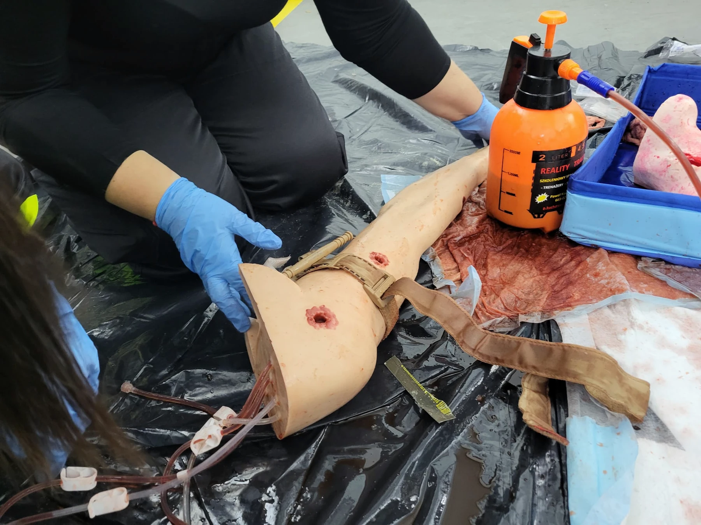
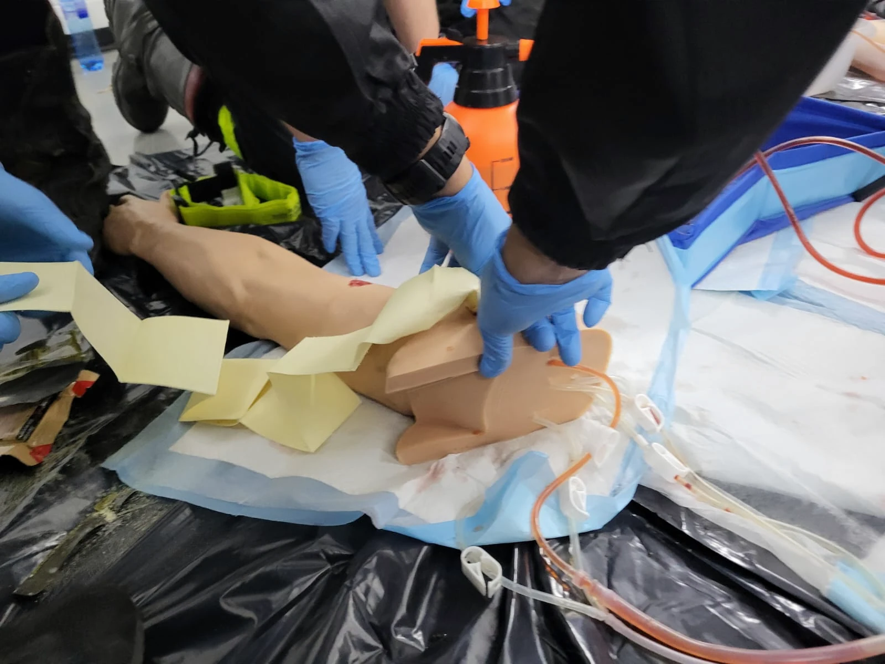

01
Rozpoznaj
i uciskaj
Masywny krwotok, bezpośredni ucisk i kontrola skuteczności.
PODSTAWY DZIAŁANIA
Uczymy skutecznego tamowania krwotoków. Bezpośredni ucisk, fabryczne opaski, pakowanie ran i działanie bez apteczki.
 Uczymy przez praktykę.
Uczymy przez praktykę.Szkolenie stacjonarne dla osób cywilnych. Instruktor na bieżąco obserwuje ćwiczenia, poprawia technikę i potwierdza wykonanie wymaganych zadań. Bez egzaminu końcowego.
Masywny krwotok, bezpośredni ucisk i kontrola skuteczności.
Fabryczna opaska uciskowa, wypełnianie właściwych ran, gaza i opatrunki hemostatyczne.
Ucisk z wykorzystaniem dostępnej odzieży oraz specyfika pomocy dzieciom.




Przygotowanie online (2–3 godziny), jeden dzień zajęć stacjonarnych i egzamin: teoria, praktyka, dydaktyka.
Kurs dla osób z przygotowaniem ratowniczym lub medycznym. Po zdaniu egzaminu otrzymujesz certyfikat instruktora; uprawnienie do prowadzenia szkoleń wymaga osobnej autoryzacji.

Podstawową prezentację, podręcznik, karty ćwiczeń i dostęp do panelu prowadzenia szkoleń oraz certyfikatów.
Ośrodek może prowadzić kursy pod własną nazwą i dodawać swoje logo do certyfikatu. Wystarczy dwóch autoryzowanych instruktorów STOP KRWOTOKOM: jeden ratownik medyczny i jeden ratownik KPP. Koordynatorem merytorycznym ośrodka jest ratownik medyczny.
Planowane kursy STOP KRWOTOKOM i kursy instruktorskie zostaną opublikowane po zakończeniu przygotowania programu. Wersja demonstracyjna nie przyjmuje zapisów ani płatności.